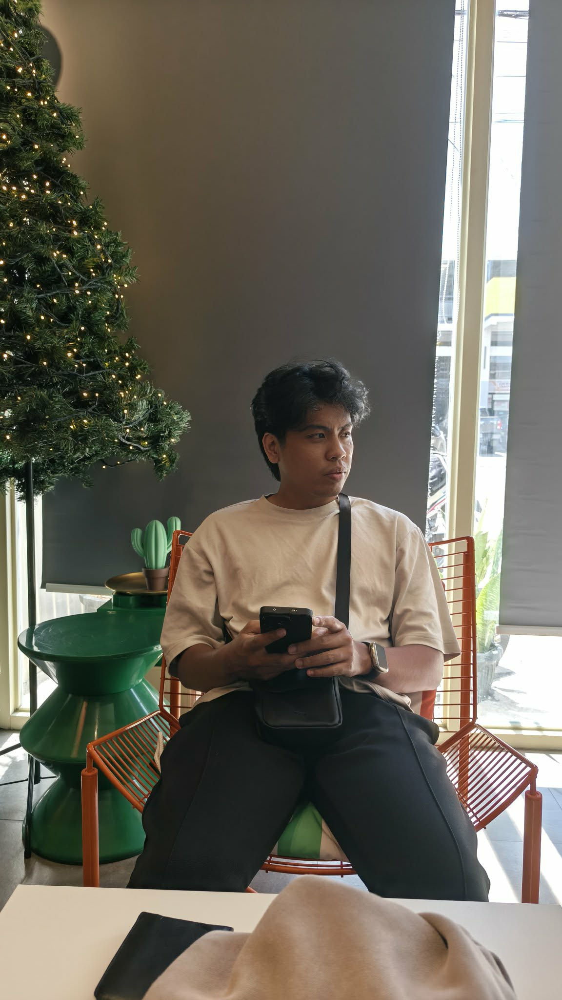
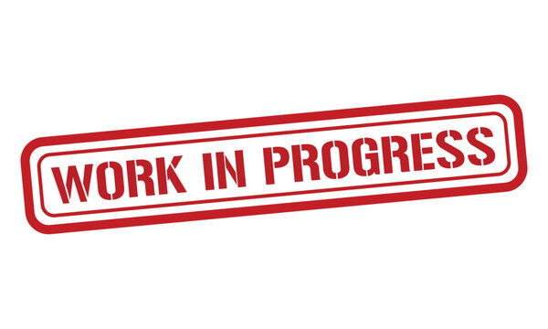

Hi, my name is Niño Lucero
I keep networks running and systems secure.
I'm a Network Support Engineer and Junior Web Developer on the path to becoming a SOC Analyst. I troubleshoot infrastructure, build clean web apps, and dig into logs to spot what shouldn't be there.

About me
Diagnosing connectivity issues, configuring routers and switches, and keeping enterprise infrastructure online. I troubleshoot VLANs, and escalated tickets to minimize downtime.
Building responsive, user-friendly websites with clean, maintainable code. I'm currently expanding my skills toward Full Stack Development.
Alongside support work, I taught myself web development. Now I'm channeling both skill sets toward security operations.
Learning to integrate AI tools into everyday workflows — from content generation and data processing to task automation and productivity systems. I'm exploring how AI can streamline both technical and creative work.
Skills and toolkit
Networking
Security (Learning)
Web Development
AI & Productivity Tools
Development & IT Platforms
Ticketing & CRM Systems
AI Automation (Learning)
Experience
Tier 2 Technical Support Engineer
2024 – Present- Troubleshoot guest Wi-Fi, VLANs, and switches to maintain seamless connectivity.
- Configure and manage network devices using Cisco Meraki, Ruckus Cloud, and CLI (PuTTY).
- Reduced Wi-Fi login failures by implementing better authentication protocols.
- Handle escalated tickets from Tier 1 support.
- Remotely troubleshoot down equipment by guiding on-site technicians.
Tier 1 Technical Support Engineer
2023 – 2024- Provided technical support and troubleshooting for customers.
- Monitored equipment status, uptime, and client connections.
- Diagnosed and resolved access point (AP) issues.
- Delivered prompt and professional customer support.
- Maintained and updated technical documentation.
Freelance Web Developer
2025 – Present- Build and deploy responsive websites and small web apps.
- Work with features and ship maintainable code.
- Handle everything from design handoff to deployment.
SOC Analyst — Self-study
2025 – Present- Completing hands-on labs in log analysis, SIEM, and incident response.
- Practicing threat detection and response techniques.
- Working toward Security+ and blue-team focused certifications.
Featured projects
Portfolio Website
Personal Project


Developed a custom portfolio site using modern HTML, CSS, and JavaScript to centralize my projects and resume. Focused on responsive layouts, accessible design, and a polished user experience that reflects my attention to detail and growing front-end expertise.
Basic Office LAN
Networking Project


Designed and deployed a stable Local Area Network for a small office environment. Configured core switching, assigned static IP schemes, and established basic connectivity to ensure seamless file sharing and internet access for all workstations.
Department VLAN Network
Networking Project


Implemented VLAN segmentation to isolate traffic across different departments (e.g., HR, IT, Sales). Configured trunk links and inter-VLAN routing to improve network performance, reduce broadcast congestion, and enforce basic traffic isolation between teams.
DHCP Automation
Networking Project


Automated IP address management by deploying a centralized DHCP server. Eliminated manual IP configuration errors, ensured dynamic and efficient address allocation, and reduced provisioning time for new devices joining the network.
Layer 2 Security
Networking Project
Hardened the access layer against internal and external threats. Implemented port security, DHCP snooping, and Dynamic ARP Inspection (DAI) to prevent MAC flooding, rogue DHCP servers, and man-in-the-middle attacks at the switch level.
AI Automation — Self-study
2025 – Present- Learning to build AI-powered workflows and automate repetitive tasks.
- Exploring prompt engineering and integrating AI tools into daily productivity.
- Practicing automation with tools like ChatGPT, Claude, and no-code platforms.
My Certificates


Contact Me
I'm currently open to network support, junior development, and entry-level security roles. Whether you have a question, an opportunity, or just want to connect — my inbox is always open.